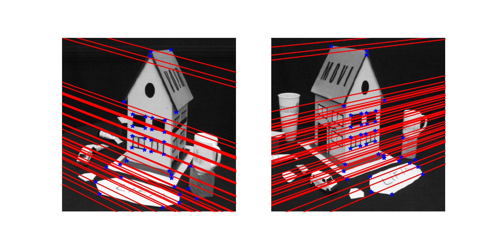
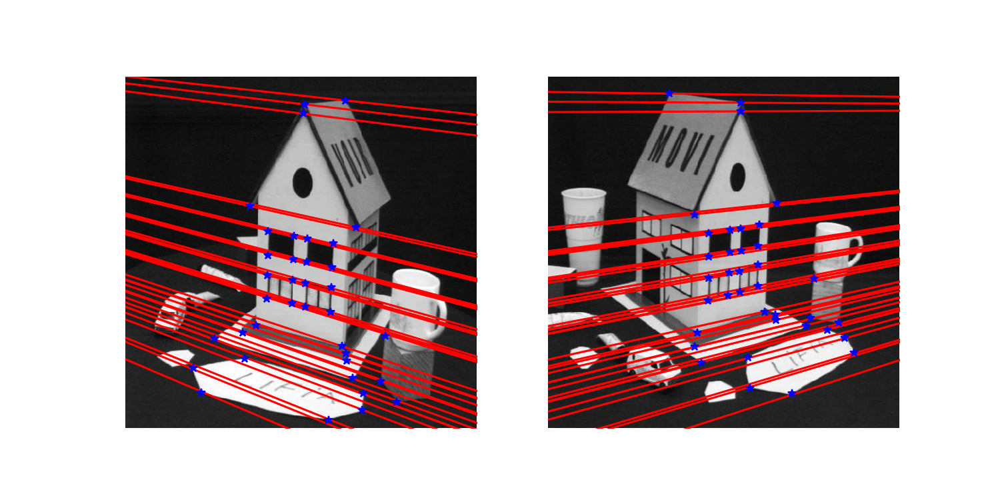
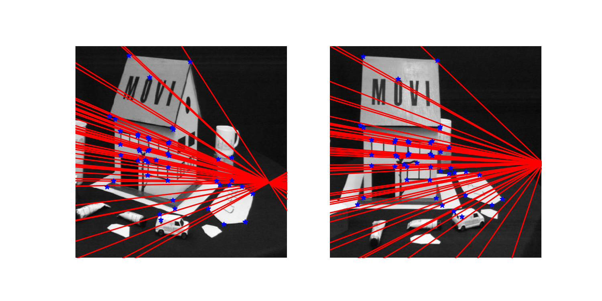
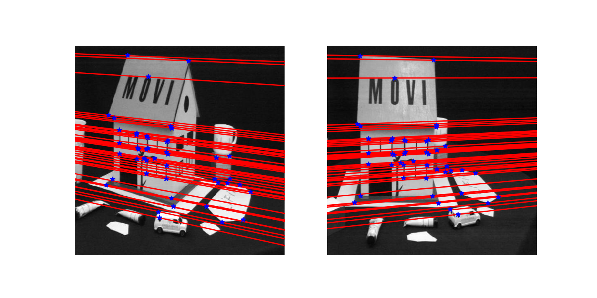
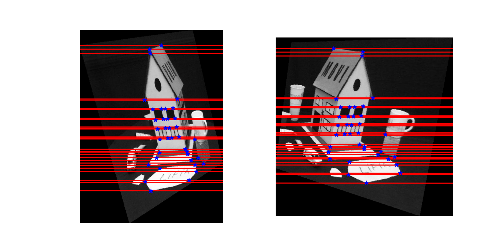
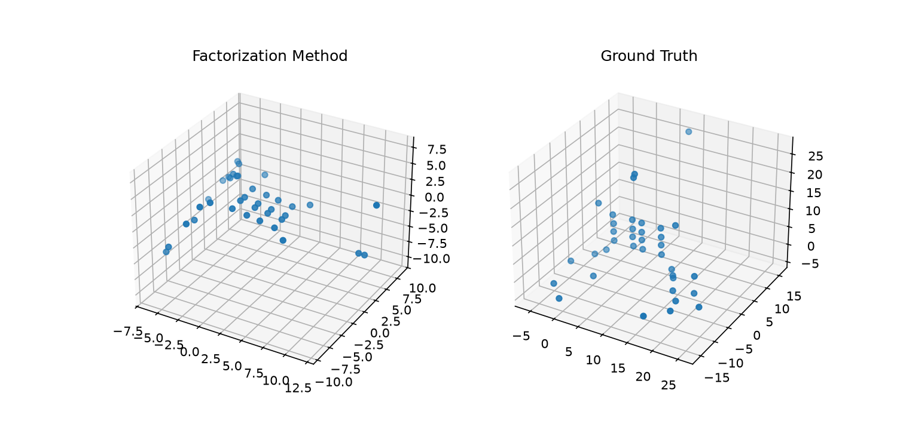
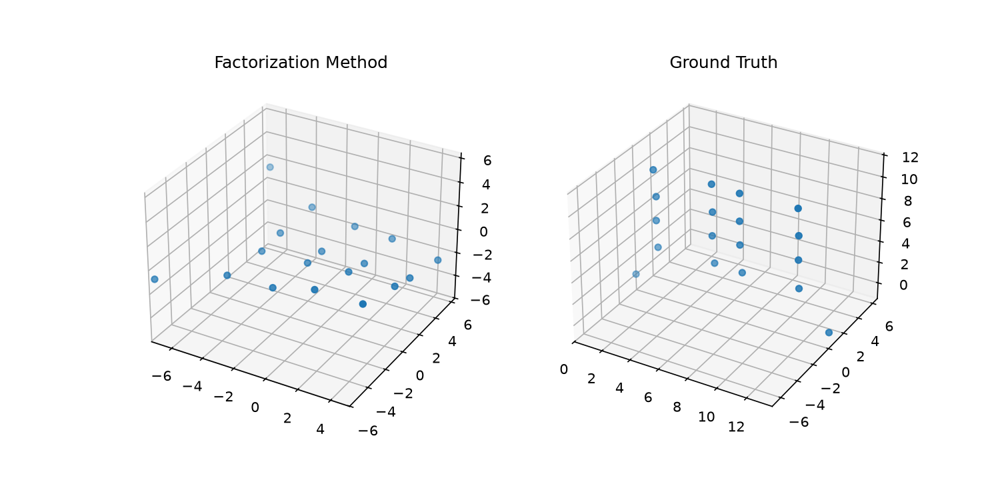
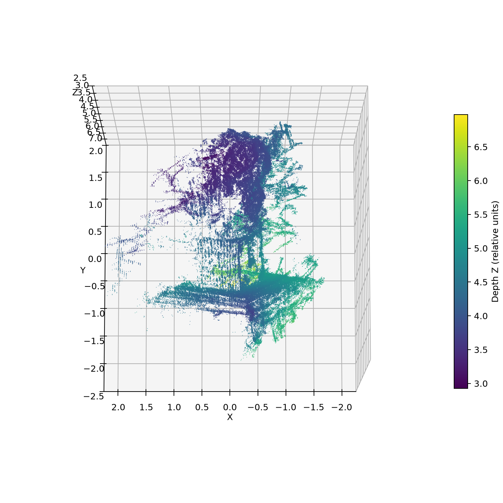

1: Fundamental Matrix Estimation from Point Correspondences
Fundamental-matrix estimation, point-to-line distances, and epipolar plots — p1.py
Point loading, rectification sampling, and 3D plotting — epipolar_utils.py
Input Images
Set 1


Set 2


1(a): Linear Least-Squares Eight-Point Implementation
def lls_eight_point_alg(points1, points2):
A = (points2[:, :, None] * points1[:, None, :]).reshape(-1, 9)
_, _, Vt = np.linalg.svd(A, full_matrices=(len(points1) == 8))
F = Vt[-1].reshape(3, 3)
U, singular_values, Vt = np.linalg.svd(F)
singular_values[-1] = 0
F = (U * singular_values) @ Vt
F /= np.linalg.norm(F)
if F.flat[np.argmax(np.abs(F))] < 0:
F = -F
return F1(b): Implementation and Fundamental Matrices
Each matching pair satisfies p2TFp1 = 0, where p1 and p2 contain the two image coordinates with a final coordinate of 1. The coordinates are used directly in pixels, without centering or rescaling.
- Build the system: Expand each matching pair into one row of A, with the nine entries of F stored row by row in a vector f. Stacking all pairs gives a 37×9 system for Set 1 and a 46×9 system for Set 2.
- Solve: Compute the SVD of A with
np.linalg.svdand take the last row of VT, corresponding to the smallest singular value. This gives a unit-length vector f that makes Af as close to zero as possible. Reshape it into a 3×3 matrix. - Enforce rank two: Compute the SVD of the fitted matrix, set its smallest singular value to zero, and reconstruct F. This enforces the fundamental matrix's rank-two constraint while changing the fitted matrix as little as possible in squared entry error.
For each correspondence, the row of A is:
[x2*x1, x2*y1, x2, y2*x1, y2*y1, y2, x1, y1, 1]Fundamental Matrices
F is defined only up to a nonzero scale. Each matrix below is scaled so the sum of its squared entries is one, with its largest-magnitude entry positive.
Set 1
[[ 1.55218081e-06, -8.18161523e-06, -1.50440111e-03],
[-5.86997052e-06, -3.02892219e-07, -1.13607605e-02],
[-3.52312036e-03, 1.41453881e-02, 9.99828068e-01]]Set 2
[[ 5.63087200e-06, -2.74976583e-05, 6.42650411e-03],
[ 2.77622828e-05, 6.74748522e-06, -1.52182033e-02],
[-1.07623595e-02, 1.22519240e-02, 9.99730547e-01]]1(c): Normalized Eight-Point Implementation
Uses the linear estimator from 1(a) after normalizing the points.
def normalized_eight_point_alg(points1, points2):
transforms = []
normalized = []
for points in (points1, points2):
center = points[:, :2].mean(axis=0)
distance = np.linalg.norm(points[:, :2] - center, axis=1).mean()
scale = np.sqrt(2) / distance
T = np.array([[scale, 0, -scale * center[0]],
[0, scale, -scale * center[1]], [0, 0, 1]])
transforms.append(T)
normalized.append(points @ T.T)
F = lls_eight_point_alg(*normalized)
F = transforms[1].T @ F @ transforms[0]
F /= np.linalg.norm(F)
if F.flat[np.argmax(np.abs(F))] < 0:
F = -F
return F1(d): Normalized Fundamental Matrices
The normalized estimates are transformed back to pixel coordinates using F = T2TFnormT1. Here, T1 and T2 center each point set and scale its mean distance from the origin to √2. The displayed matrices use the same scale and sign convention as 1(b).
Set 1
[[ 4.45505557e-06, -3.63935568e-05, 6.03119338e-04],
[-3.35055836e-05, -2.32218046e-06, -4.39148773e-02],
[-5.84762546e-03, 6.03085864e-02, 9.97195967e-01]]Set 2
[[ 1.33351218e-05, -2.22048310e-04, 1.37802168e-02],
[-3.20320025e-04, -2.83731330e-05, -6.19621780e-01],
[-2.08672226e-02, 7.52241693e-01, 2.22656232e-01]]1(e): Point-to-Line Distance Implementation
def compute_distance_to_epipolar_lines(points1, points2, F):
lines = points2 @ F
distances = np.abs(np.sum(points1 * lines, axis=1))
distances /= np.linalg.norm(lines[:, :2], axis=1)
return distances.mean()1(f): Distance Calculation and Comparison
- Find the lines: For each point p2 in Image 2, compute its corresponding line in Image 1 as l1 = FTp2. Its coefficients (a, b, c) define the line ax + by + c = 0.
- Measure distance: Substitute the matching Image 1 point (x, y) into the distance formula below. The absolute value keeps the distance nonnegative, and dividing by the length of the line's normal vector removes the arbitrary scale of the line coefficients.
- Average: Take the mean over all matching pairs. For Image 2, swap the point sets and transpose F in the same function, giving lines l2 = Fp1.
Mean Distance to Epipolar Lines
| Image Pair | Algorithm | Image 1 (px) | Image 2 (px) |
|---|---|---|---|
| Set 1 | Linear least squares | 28.0257 | 25.1629 |
| Set 1 | Normalized | 0.8906 | 0.8287 |
| Set 2 | Linear least squares | 9.7014 | 14.5682 |
| Set 2 | Normalized | 0.8895 | 0.8917 |
The normalized method gives mean distances below one pixel in all four images. The unnormalized estimates are much worse, with distances ranging from 9.7014 to 28.0257 pixels. Products of pixel coordinates can be much larger than the other terms in A, making the equations poorly balanced. Centering and scaling the points reduces this imbalance before solving for F.
Set 1: Epipolar Lines
Red lines are predicted from points in the other image; blue markers show the measured points. Each panel shows the original image coordinate system.




Set 2: Epipolar Lines




The unnormalized lines miss several points around the roof and base. After normalization, the lines pass much closer to the blue markers in both sets, consistent with the table. The distances measure the supplied points used to fit F; they do not measure accuracy on new correspondences.
2: Matching Homographies for Image Rectification
Epipoles and matching rectification homographies — p2.py
Fundamental-matrix estimation uses 1(c).
2(a): Compute the Epipoles
def compute_epipole(F):
U, _, _ = np.linalg.svd(F)
e = U[:, -1]
return e / e[2]2(b): Map an Epipole to Infinity
def compute_H(e, im):
height, width = im.shape[:2]
T = np.array([[1., 0, -width / 2], [0, 1, -height / 2], [0, 0, 1]])
e = T @ e
alpha = 1 if e[0] >= 0 else -1
cosine, sine = alpha * e[:2] / np.linalg.norm(e[:2])
R = np.array([[cosine, sine, 0], [-sine, cosine, 0], [0, 0, 1]])
rotated = R @ e
G = np.eye(3)
G[2, 0] = -rotated[2] / rotated[0]
return np.linalg.inv(T) @ G @ R @ T2(c): Find Matching Homographies
Uses compute_H() from 2(b).
def compute_matching_homographies(e2, F, im2, points1, points2):
H2 = compute_H(e2, im2)
x, y, z = e2
cross = np.array([[0, -z, y], [z, 0, -x], [-y, x, 0]])
M = cross @ F + np.outer(e2, np.ones(3))
mapped1 = points1 @ (H2 @ M).T
mapped2 = points2 @ H2.T
mapped1 /= mapped1[:, 2:3]
mapped2 /= mapped2[:, 2:3]
a = np.linalg.lstsq(mapped1, mapped2[:, 0], rcond=None)[0]
HA = np.eye(3)
HA[0] = a
return HA @ H2 @ M, H22(d): Rectified Images and Correspondence Search


The epipolar lines are now nearly horizontal in both images. This reduces correspondence search to varying the x-coordinate along the matching epipolar line instead of searching across the image. A narrow band around the line allows for errors in the estimated transforms.
3: The Factorization Method
Affine structure and motion factorization — p3.py
3(a): Factorization Implementation
def factorization_method(points_im1, points_im2):
W = np.vstack((points_im1[:, :2].T, points_im2[:, :2].T))
W -= W.mean(axis=1, keepdims=True)
U, singular_values, Vt = np.linalg.svd(W, full_matrices=False)
root = np.sqrt(singular_values[:3])
motion = U[:, :3] * root
structure = root[:, None] * Vt[:3]
return structure, motion3(b): Method
- Center the measurements: Stack the coordinates into W with rows x1, y1, x2, y2, giving a 4×N matrix. Subtract each row's mean so both sets of image points are centered at the origin. This removes image translation before factorization.
- Keep three components: Compute the SVD, W = UΣVT. Keep the three largest singular values and the matching columns of U and rows of VT. This removes the fourth component and gives the rank-three approximation with the smallest sum of squared entry errors.
- Separate motion and structure: Multiply each retained column of U by the square root of its singular value to form M. Multiply each retained row of VT by the same square root to form S. M is 4×3, with two rows per camera. S is 3×N, with one reconstructed 3D point per column.
Multiplying M and S recovers the centered image coordinates approximately. Adding the original row means would place them back in the original images.
3(c): Reconstruction and Ground Truth


The full reconstruction recovers the rows of points and the broader arrangement of the model, but its position, size, and orientation differ from the ground truth. Centering removes the original translation, and the SVD chooses its own coordinate axes and scale. The image measurements therefore do not determine the same 3D coordinate system used by the ground truth.
A rotation or reflection and a change of scale can account for the coordinate-system differences. The affine factorization can also leave shear or unequal axis scales, so an exact match after only rotation and uniform scaling is not guaranteed. Perspective effects and measurement errors contribute to the remaining shape differences.
3(d): Singular Values
[959.5852, 540.4761, 184.4317, 27.9152]W has four rows, so it can have four nonzero singular values. Here, perspective effects and correspondence errors prevent the measured coordinates from fitting an exact rank-three affine model. They leave a fourth singular value of 27.9152, which is smaller than the first three but not zero.
In the ideal model, W = MS, with M of size 4×3 and S of size 3×37, so the product has rank at most three. When the points span three dimensions and the views constrain them, three singular values are nonzero and the fourth is zero. Centering is important: it removes image translation, which could otherwise add another rank-one term.
3(e): Reconstruction from Fewer Points


The subset still contains rows of points, but their relative positions are less consistent with the ground truth. The ground-truth points lie close to a plane, while the reconstruction spreads them through a thicker region. This is a shape difference, rather than just the change in scale and orientation seen in the full reconstruction.
The subset's geometry matters as well as its smaller size. These 18 points vary mainly along two directions, with very little variation perpendicular to their plane. That makes the third dimension hard to estimate. The algorithm still retains three SVD components, so errors in the correspondences and the affine approximation can be mistaken for depth. The full set spans more of the 3D scene and constrains this direction more strongly.
3(f): Singular-Value Comparison
| Point Set | σ1 | σ2 | σ3 | σ4 |
|---|---|---|---|---|
| Full set (37 points) | 959.5852 | 540.4761 | 184.4317 | 27.9152 |
| Subset (18 points) | 264.5440 | 210.0607 | 7.2192 | 5.1286 |
All four values decrease with the smaller set of points and its smaller spatial extent. The largest relative drop is in the third value, from 184.4317 to 7.2192. Relative to the second value, σ3/σ2 falls from 0.3412 to 0.0344. Most of the subset's variation is therefore concentrated in its first two components, consistent with the nearly planar ground truth.
The gap between the third and fourth values also shrinks: σ3/σ4 falls from 6.6069 to 1.4076. The third component is now only slightly larger than the fourth component that the algorithm discards. This makes weak depth variation harder to separate from measurement errors and perspective effects, explaining the extra thickness visible in 3(e).
4: Triangulation in Structure from Motion
Camera poses, triangulation, and statue reconstruction — p4.py
Track merging and bundle adjustment — sfm_utils.py
Input Sequence


4(a): Rotation and Translation Candidates
def estimate_initial_RT(E):
U, _, Vt = np.linalg.svd(E)
W = np.array([[0., -1, 0], [1, 0, 0], [0, 0, 1]])
candidates = []
for middle in (W, W.T):
R = U @ middle @ Vt
R *= np.linalg.det(R)
for sign in (1, -1):
candidates.append(np.column_stack((R, sign * U[:, 2])))
return np.array(candidates)4(b): Linear Triangulation
def linear_estimate_3d_point(image_points, camera_matrices):
A = np.empty((2 * len(image_points), 4))
A[0::2] = image_points[:, 0:1] * camera_matrices[:, 2] - camera_matrices[:, 0]
A[1::2] = image_points[:, 1:2] * camera_matrices[:, 2] - camera_matrices[:, 1]
_, _, Vt = np.linalg.svd(A, full_matrices=False)
return Vt[-1, :3] / Vt[-1, 3]4(c): Reprojection Error and Jacobian
def reprojection_error(point_3d, image_points, camera_matrices):
projected = camera_matrices @ np.append(point_3d, 1)
predicted = projected[:, :2] / projected[:, 2:3]
return (predicted - image_points).reshape(-1)def jacobian(point_3d, camera_matrices):
projected = camera_matrices @ np.append(point_3d, 1)
predicted = projected[:, :2] / projected[:, 2:3]
J = (camera_matrices[:, :2, :3]
- predicted[:, :, None] * camera_matrices[:, 2:3, :3])
J /= projected[:, 2, None, None]
return J.reshape(-1, 3)4(d): Nonlinear Triangulation
Uses the linear initialization from 4(b) and the residual and Jacobian from 4(c).
def nonlinear_estimate_3d_point(image_points, camera_matrices):
point = linear_estimate_3d_point(image_points, camera_matrices)
for _ in range(10):
error = reprojection_error(point, image_points, camera_matrices)
J = jacobian(point, camera_matrices)
point -= np.linalg.lstsq(J, error, rcond=None)[0]
return point4(e): Select the Camera Pose
Uses the pose candidates from 4(a) and nonlinear triangulation from 4(d).
def estimate_RT_from_E(E, image_points, K):
candidates = estimate_initial_RT(E)
counts = np.zeros(4, dtype=int)
first_camera = K @ np.column_stack((np.eye(3), np.zeros(3)))
for index, RT in enumerate(candidates):
cameras = np.array([first_camera, K @ RT])
for matches in image_points:
point = nonlinear_estimate_3d_point(matches, cameras)
second_point = RT[:, :3] @ point + RT[:, 3]
if point[2] > 0 and second_point[2] > 0:
counts[index] += 1
return candidates[np.argmax(counts)]4(f): Statue Reconstruction and Larger Scenes
The supplied framework uses pose selection from 4(e) and triangulation from 4(d).
frames = [0] * (len(image_paths) - 1)
for i in range(len(image_paths)-1):
frames[i] = Frame(matches_subset[i].T, focal_length,
fundamental_matrices[i], im_width, im_height)
bundle_adjustment(frames[i])
merged_frame = merge_all_frames(frames)
camera_matrices = np.zeros((2,3,4))
dense_structure = np.zeros((0,3))
for i in range(len(dense_matches)):
matches = dense_matches[i]
camera_matrices[0,:,:] = merged_frame.K.dot(
merged_frame.motion[i,:,:])
camera_matrices[1,:,:] = merged_frame.K.dot(
merged_frame.motion[i+1,:,:])
points_3d = np.zeros((matches.shape[1], 3))
use_point = np.array([True]*matches.shape[1])
for j in range(matches.shape[1]):
points_3d[j,:] = nonlinear_estimate_3d_point(
matches[:,j].reshape((2,2)), camera_matrices)
dense_structure = np.vstack((dense_structure, points_3d[use_point,:]))
reference = merged_frame.motion[0]
camera_centers = [-pose[:, :3].T @ pose[:, 3] for pose in merged_frame.motion[:2]]
baseline = np.linalg.norm(camera_centers[1] - camera_centers[0])
display_points = (dense_structure @ reference[:, :3].T + reference[:, 3]) / baseline
limits = np.array([[-2.25, 2.25], [-2.5, 2.], [2.5, 7.]])
visible = ((display_points >= limits[:, 0]) & (display_points <= limits[:, 1])).all(axis=1)
shown = display_points[visible]
fig = plt.figure(figsize=(8, 8), layout='constrained')
ax = fig.add_subplot(111, projection='3d')
points = ax.scatter(*shown.T, c=shown[:, 2], cmap='viridis', s=.4,
linewidths=0, depthshade=False)
ax.set(xlim=limits[0], ylim=limits[1], zlim=limits[2],
xlabel='X', ylabel='Y', zlabel='Z')
ax.set_box_aspect((1, 1, 1))
ax.view_init(-100, 90)
fig.colorbar(points, ax=ax, shrink=.55, pad=.02, label='Depth Z (relative units)')
fig.savefig(OUTPUT / 'statue_reconstruction.png', dpi=180)
plt.close(fig)

A house needs more viewpoints to cover its larger extent, and surfaces hidden from one position may only become visible from another. Blank walls provide few distinctive features, while repeated windows and bricks can match the wrong part of the building. Changes in lighting, reflections, and moving objects also make matching less reliable than for the small, stationary statue.
More images mean more camera positions and 3D points to optimize together in bundle adjustment, increasing memory use and computation. Small camera-position and orientation errors can also accumulate along the sequence, causing drift. Overlapping views and revisiting earlier areas help connect the reconstruction. For distant surfaces, small camera movements shift points by very few pixels, so larger separations are needed for reliable depth; these can reduce overlap and make matching harder.